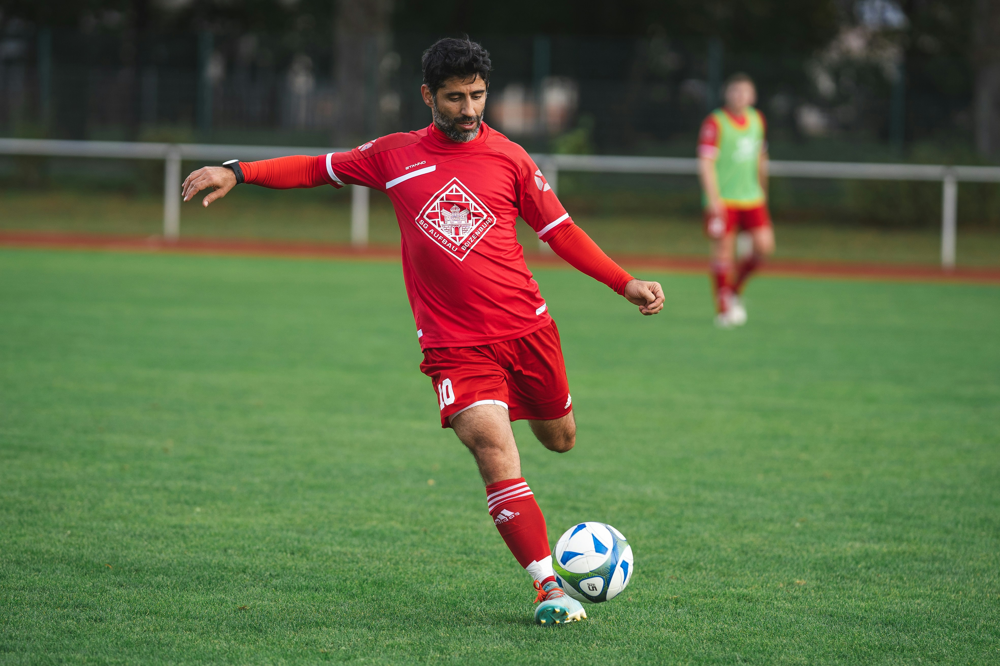

News
Brave Comeback Win for Orlando Stars FC
Date: 25 August 2025
Report: Orlando Stars produced a thrilling performance on Sunday
afternoon, coming from behind to secure a 3-2 victory against
Liverpool FC at the Old trafford stadium. Just before halftime, our
captain Anthony Lukaku equalised with a strong header after the
visitors had taken an early lead in the 12th minute. With an
incredible strike from outside the box in the second half, Salem
Amad increased our lead and sent the home crowd into a frenzy.
Substitute Shim Xhang was the hero, scored the game-winning goal in
stoppage time to secure all three points, despite Liverpool trying
the score late on.
Coach's Comments
The head coach Jurgen klopp declared, "I'm proud of the character
the boys showed today." "The team's spirit is getting stronger every
week, and we battled until the very end."

Next Fixture: We will face Coventry united on 31 August 2025 at
Stamford bridge. Kickoff is scheduled for 19:30pm [South African
time]
Breaking news!!
Report: We are delighted to announce the signing of Amando Broja,
who joins Orlando Stars from Burnley ahead of the new season. The 26
year old Albanian Striker brings 7 years of experience and a proven
record, having scored 15 goals last season, represented national
team, and won 4 league titles.

Coach’s Comment: Head Coach Jurgen Klopp said: “We’re thrilled to
have Amando join the team. Their talent, hard work, and passion for
the game will make a big difference for us this season.”
Player’s First Words: Amando shared their excitement: “It’s an honor
to wear the black and white colours. I can’t wait to meet the fans
and fight for success with this amazing club.”